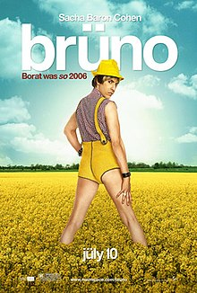

2009年6月25日，杰克逊在他位于洛杉矶荷尔贝山租赁的住处逝世。他的私人医生康拉德·默里曾试图急救但没有成功。洛杉矶消防队的救护人员于中午12:22接到911电话，并于三分钟后抵达杰克逊的住所。据报道，当时杰克逊已停止呼吸，救护人员对他进行心肺复苏术。杰克逊被紧急送往加州大学洛杉矶分校附属医疗中心急救，于中午1:13抵达医院。当地时间2:26（协调世界时 21:26）迈克尔·杰克逊被宣告死亡。杰克逊的逝世引发全球性的悲痛。
杰克逊逝世这条新闻迅速在网络上传开，网友的访问剧增导致网站的访问缓慢以及服务器瘫痪。TMZ和洛杉矶时报的网站遭遇崩溃。谷歌最初认为数以百万计的人搜索“迈克尔·杰克逊”是搜索引擎遭遇到DDoS攻击，所以阻止有关于迈克尔·杰克逊的搜索长达30分钟。维基百科在3:15和推特一样都遭遇崩溃。维基媒体基金会称在不到一小时内有将近一百万人访问杰克逊的生平，这可能是维基百科历史上访问量最多的一小时。美国在线即时通讯瘫痪40分钟。美国在线称这是“互联网历史上一个有重大意义的时刻”，又称“无论从广度还是深度来看，我们从来没有见过这样的事情。” 据报道，在新闻传开后，大约15%的推特，也等同于每分钟5,000条推文提到杰克逊，相比较而言，有关2009年伊朗总统选举和2009年H1N1流感大流行等前些时间的新闻头条只有5%。而网络流量从11%至少比正常水平提高二十多个百分点。
音乐电视网和黑人娱乐电视台均马拉松式的播出杰克逊的音乐影片。 杰克逊的特别报道在全世界的多个电视台播出。英国肥皂剧《东区人》在6月26日的剧集结尾为此增加一个环节。杰克逊的逝世成为《太阳报》的头版头条长达两周。在相同的时间段，美国三大电视网络的晚间新闻，ABC世界新闻、CBS晚间新闻以及NBC晚间新闻，多达34%的时间都在报道他，包括《时代》在内的很多杂志出版纪念版。电影《G型教主》中有关杰克逊二姐拉托亚的镜头因为对杰克逊家庭缺少尊重而被删减。
|  | ||
| 英国肥皂剧《东区人》 | 《时代》杂志 | 电影《G型教主》 |
杰克逊的追思会于2009年7月7日在洛杉矶斯台普斯中心举行，在此之前，杰克逊的私人悼念仪式在森林草坪纪念公园的自由大厅举行。160万名歌迷在两天的申请期内申请门票，由于参与人数之多，主办方采用彩票式的方法最终以随机抽取8,750人，每人得到两张门票。杰克逊的灵柩出现在追思会现场，但没有关于遗体最终处置的消息发布。 杰克逊的追思会是网络流媒体历史上观看人数最多的事件之一。据尼尔森估算，大约有3110万美国人观看追思会，相比较，2004年前总统罗纳德·里根下葬大约有3510万人收看，1997年戴安娜王妃的葬礼大约有3310万美国人收看。
玛丽亚·凯莉、史提夫·汪达、莱昂纳尔·里奇、约翰·梅尔、珍妮弗·赫德森、亚瑟小子、杰曼·杰克逊以及夏恩·贾法戈利上场表演。贝里·戈迪和斯莫基·罗宾逊献上颂词，奎恩·拉提法朗读由马娅·安杰卢为杰克逊写的诗《我们曾拥有他》（We had him）。艾尔·夏普顿牧师告诉杰克逊的孩子“你们的父亲不是怪物，你们的父亲被迫对付的那些东西才是怪物。但是他不得不对付”时，赢得全场的起立鼓掌和欢呼。追思会上杰克逊11岁的女儿帕丽斯·凯瑟琳首次公开发言，她哭着说出“从我出生以来，爸爸一直就是你所能想象出的最好的父亲……我只想说我爱他……那么的爱他。”西奥斯·史密斯牧师做出最后的祈祷。
| 马娅·安杰卢为杰克逊写的诗《我们曾拥有他》（We had him） |
8月24日，几个新闻媒体援引匿名的消息来源指出，洛杉矶验尸官已经决定将杰克逊的死亡看做一起杀人案；这一消息随后于8月28日由验尸官证实。在杰克逊死亡的时候已经被施用异丙酚、劳拉西泮以及咪达唑仑。执法人员对他的私人医生康拉德·默里就过失杀人进行调查。2010年2月8日，默里被洛杉矶检方指控过失杀人罪.
| 康拉德·默里被洛杉矶检方指控 |
杰克逊于2009年9月3日在加州格伦代尔森林草坪纪念公园下葬。 2010年6月25日，在杰克逊去世一周年之际，歌迷来到洛杉矶以表达对他的敬意。他们参观好莱坞星光大道上的杰克逊星、杰克逊的家以及森林草坪纪念公园。很多歌迷携带着向日葵和其他纪念物品。杰克逊的家庭和密友前来瞻仰。凯瑟琳回到印第安纳州加里市揭幕放置在杰克逊家前院的花岗岩纪念碑。纪念持续成烛光守夜活动和进行名为《We Are The World》的表演。
 |
| 杰克逊曾演唱的歌曲《We Are The World》 |
6月26日，人们在洛杉矶警察局前的老帕克中心举行抗议游行，并递交要求公正的数千人签名的请愿书。杰克逊家族基金会和VoicePlate制作公司举办了一场名为“永远的迈克尔”（Forever Michael）的纪念活动，活动集合杰克逊的家人、名人、歌迷、支持者和社区人士，歌颂并荣耀他一生的成就。活动所得收入的一部分捐献给杰克逊最热衷的慈善事业。凯瑟琳还介绍她的新书《永不说再见》（Never Can Say Goodbye）
| 歌曲专辑《永远的迈克尔》（Forever Michael） | 书籍《永不说再见》（Never Can Say Goodbye） |